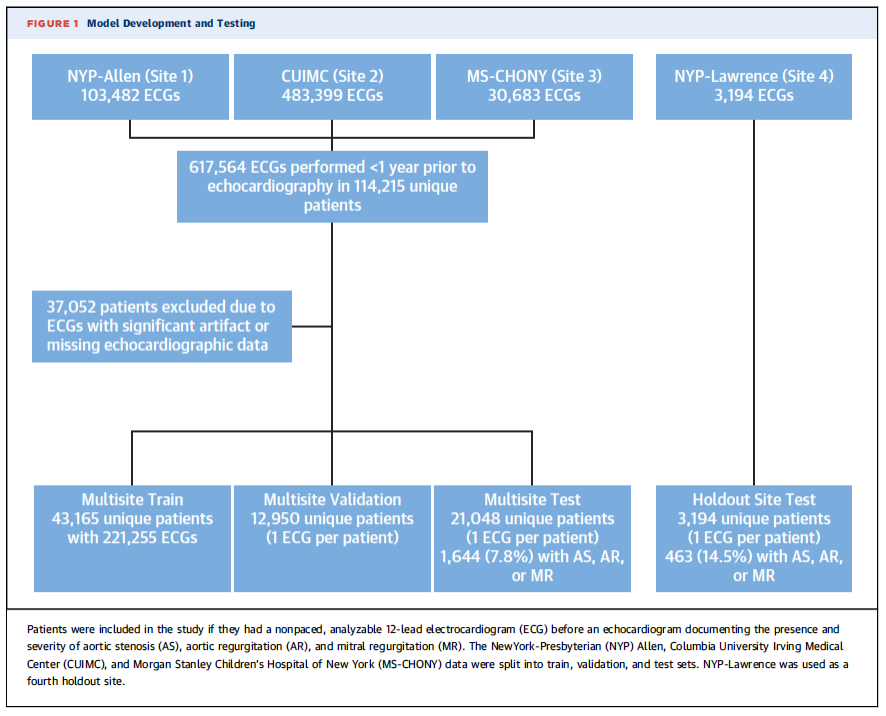
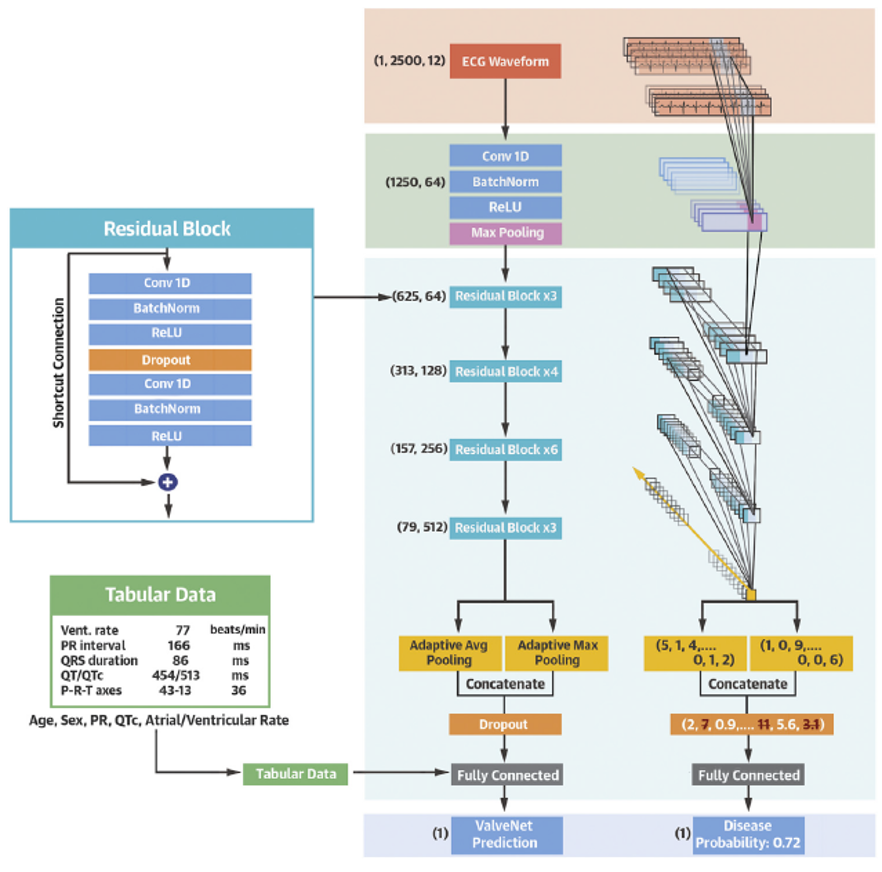
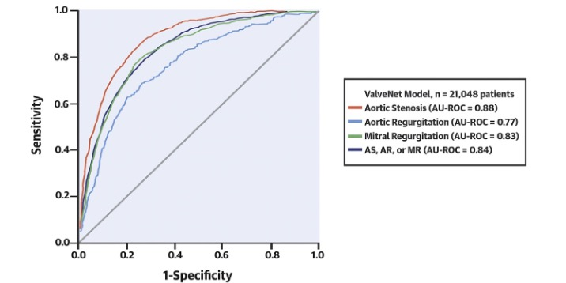

ValveNet
The routine 12-lead electrocardiogram (ECG) is ubiquitous, inexpensive, and highly useful in the assessment of heart disease. However, it is limited in its sensitivity and specificity in the detection of serious structural heart diseases. In this project, we theorized that deep learning analysis of the ECG could enable the detection of patients with three valvular diseases – aortic stenosis, aortic regurgitation, and mitral regurgitation – through improved analysis of this feature-rich data.
We first developed a research database that was comprised of all patients at our medical center who had undergone an ECG and an echocardiogram. This yielded 77,163 patients who had undergone an ECG within a year prior to an echocardiogram. This data was split into train, validation, and test sets.
A convolutional neural network was trained using the raw ECG waveform (30,000 data points per ECG) using multiple ResNet blocks with fusion of tabular data (like age) to detect patients with moderate or severe aortic stenosis, aortic regurgitation, mitral regurgitation, and a combination of any of the three valvular lesions. Multiple model architectures were trialed, with the final model providing a high level of accuracy in the validation set at a low computational cost.
We found that the model could accurately detect each of the three valvular lesions alone and in combination. We are currently deploying this model in a prospective clinical study to identify patients with undiagnosed valvular heart disease at Columbia University Irving Medical Center.
 For more details, see our accompanying paper,Deep Learning Electrocardiographic Analysis for Detection of Left-Sided Valvular Heart Disease
Pierre Elias & Timothy J. Poterucha, et al.
Journal of the American College of Cardiology, August 1, 2022.